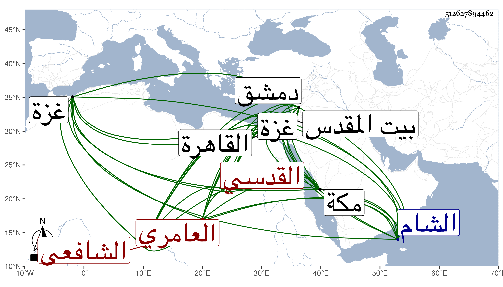

0902Sakhawi.DawLamic.ITO20230111-ara1.EIS1600.512627894462
Biography ID: 512627894462
599
محمد بن رمضان بن شعبان الشمس العامري نسبة لقبيلة تسمى بني عامر بجبال القدس القدسي نزيل غزة ثم الشام الشافعي . ولد سنة أربع وستين تقريبا بأطريا من عمل غزة وتحول منها فحفظ المنهاج والشاطبيتين وجمع الجوامع وغيرها . وعرض على الشمس بن حامد والبرهان بن أبي شريف والشهاب بن شعبان وقرأ عليه في الجزرية والجرومية وغيرهما ، وحج ودخل دمشق وحضر عند التقي بن قاضي عجلون ثم القاهرة وسمع مني وعلي في سنة ست وتسعين أجزاء كالمسلسل وحديث زهير وبدء الوحي من البخاري وبعض مسلم والقول البديع ، وجاور بعد ذلك بمكة وكان يحضر عند السيد الكمال بن حمزة وغيره ويلازمني في أشياء ويطالع لعبد الغفار النطوبسي .
